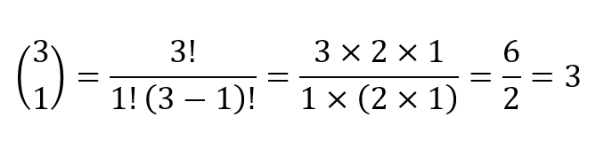

Koefisien Binomial
Koefisien binomial adalah sebuah konsep dalam matematika yang bilangan-bilangannya muncul dari hasil penjabaran dua peubah yang dipangkatkan. Koefisien binomial sering digunakan dalam kombinatorika, aljabar, dan teori peluang.
Rumus:
$$\binom{n}{k} = \frac{n!}{k!(n-k)!}$$
Keterangan:
n = Jumlah total objek dalam kumpulan
k = Jumlah objek yang dipilih dari kumpulan
! = Faktorial dari suatu bilangan
Contoh Soal:
Penyelesaian:
$$\binom{3}{1} = \frac{3!}{1!(3-1)!}$$
$$\binom{3}{1} = \frac{3 \times 2 \times 1}{1 \times (2 \times 1)}$$
$$\binom{3}{1} = \frac{6}{2} = \mathbf{3}$$
Penjelasan:
Artinya: Ada 3 cara berbeda untuk mendapatkan hasil kombinasi satu \(b\) dan dua \(a\) (\(a^2b\)) saat kamu mengalikan \((a+b)(a+b)(a+b)\).
Karena ada 3 kejadian, maka dalam penjabaran akhir matematika, suku tersebut ditulis sebagai: $$3a^2b$$